Apply, Map & Transform in Pandas
Master value translation, custom conditional rules, row/column operations, and group-wise row feature engineering using Python's most versatile transformation toolkit.
Course Roadmap & Table of Contents
Topic 14 mein hum data transformation ke 4 core pillars ko systematically aur practically seekhenge:
1. Introduction: Why Do We Need Apply, Map & Transform?
Real-world data science aur analytics projects mein data kabhi bhi ready-to-use format mein nahi milta. Aapke samne aksar aisi practical requirements aati hain:
- College Performance: Student ke letter grades
['A', 'B', 'C']ko numerical grade points[10, 8, 6]mein convert karna, attendance percentage ke hisaab se exam eligibility tag assign karna, aur har student ke marks ko uske department ke average marks se compare karna. - E-Commerce Retail: Category codes
['ELEC', 'OFF', 'FURN']ko readable names mein translate karna, unit price aur discount ke hisaab se net revenue calculate karna, aur har order ka uski parent category ke total revenue mein percentage contribution nikaalna.
Naye programmers aksar DataFrame par Python for loops ya iterrows() chalane lagte hain.
Yeh approach 100x se 500x slow hoti hai, memory exhaust kar sakti hai, aur code ko unreadable bana deti hai!
Pandas hume 4 highly specialized methods deta hai jo clean, expressive, aur optimized transformation provide karte hain.
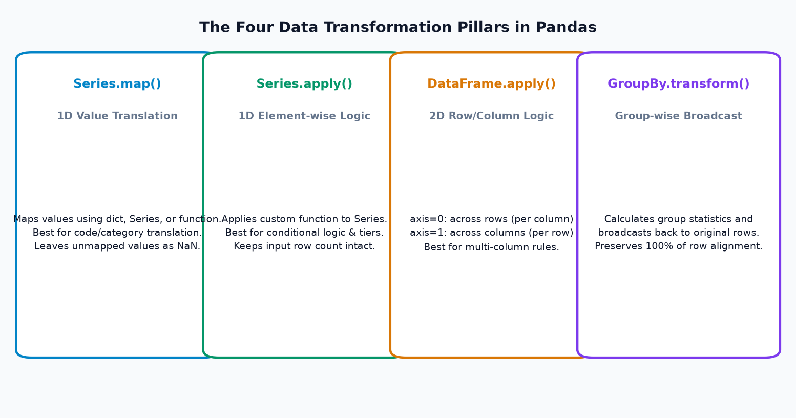
The Four Transformation Pillars at a Glance
| Method | Target Object | Input Accepted | Core Purpose | Output Alignment |
|---|---|---|---|---|
Series.map() |
Single Column (Series) | Dictionary, Series, or Function | Direct 1-to-1 key-value replacement & code translation | Exact same rows ($M$ rows) |
Series.apply() |
Single Column (Series) | Callable function or Lambda | Custom multi-branch conditional logic & tier classification | Exact same rows ($M$ rows) |
DataFrame.apply() |
2D Table (DataFrame) | Callable function (axis=0 or 1) | Multi-column formulas, row-wise totals, or column summaries | Rows (axis=1) or Columns (axis=0) |
GroupBy.transform() |
Grouped Series / DF | Aggregation/Transform function | Calculate group statistics & broadcast back to original rows | Exact same original rows ($M$ rows) |
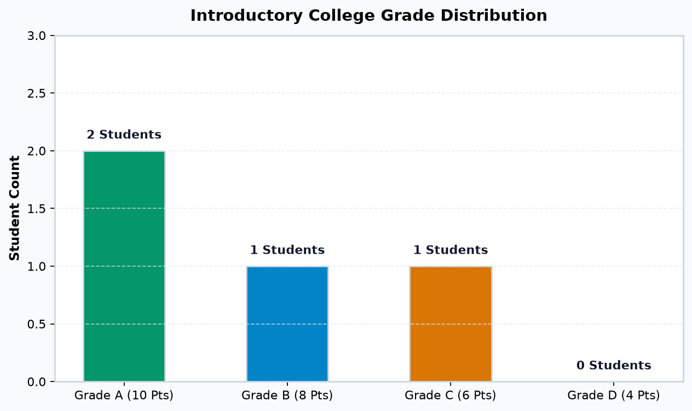
Example 1: Introductory College Data (Mapping Grades to Points)
Maan lijiye hamare paas students ke letter grades hain aur hume unhe unke numerical grade points mein map karna hai:
import pandas as pd
df_students = pd.DataFrame({
"student": ["Aman", "Priya", "Rahul", "Neha"],
"grade": ["A", "B", "A", "C"]
})
# Define translation dictionary
grade_points = {"A": 10, "B": 8, "C": 6}
# Map grades to points
df_students["grade_points"] = df_students["grade"].map(grade_points)
print(df_students)Example 2: Introductory E-Commerce Data (Vectorized Revenue vs Row Transformation)
E-commerce transactions mein har item ka net revenue hum quantity, unit price, aur discount percentage se calculate karte hain:
import pandas as pd
df_orders = pd.DataFrame({
"order_id": ["ORD101", "ORD102", "ORD103"],
"product": ["Wireless Mouse", "Keyboard", "USB Hub"],
"quantity": [2, 1, 3],
"unit_price": [1299.0, 4500.0, 850.0],
"discount": [0.10, 0.15, 0.00]
})
# Vectorized direct calculation (quantity * price * (1 - discount))
df_orders["net_revenue"] = df_orders["quantity"] * df_orders["unit_price"] * (1 - df_orders["discount"])
print(df_orders[["product", "quantity", "unit_price", "net_revenue"]])
Yaad rakhein: map(), apply(), aur transform() ek doosre ke substitute nahi hain!
Har method ka ek unique purpose aur behavior hota hai. Aaiye ab ek-ek karke inke depth aur nuances ko samjhein.
2. Understanding Series.map()
Series.map() ek aisi transformation method hai jo Series ke har individual element par operate karti hai.
Iski sabse badi taqat hoti hai: Direct 1-to-1 Key-Value Translation!
Jab aapko categorical codes (jaise ['CS', 'IT', 'EC']) ko unke descriptive names (jaise ['Computer Science', 'Information Tech', 'Electronics']) mein convert karna ho, toh map() sabse fastest aur cleanest tareeqa hai.
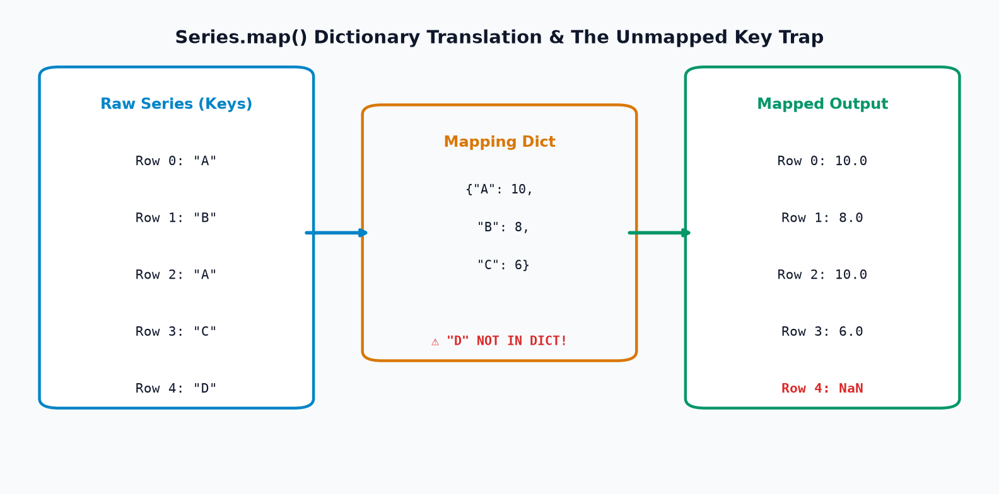
What Inputs Does Series.map() Accept?
- Dictionary:
series.map({"key": "value"})• Sabse popular use case. Fast hash-table lookup karta hai. - Another Series: Agar aapke paas doosri Series hai jiska index input Series ke values se match karta hai.
- Python Function:
series.map(func)• Har element ko function mein pass karta hai (jaise text cleaning ya formatting).
Agar input Series ke andar koi aisi value aati hai jo dictionary ke keys mein exist nahi karti (jaise grade "D"), toh map() koi error throw nahi karta!
Balki woh khamoshi se us cell ko NaN (missing value) bana deta hai!
Isliye production code mein naye column ko tab tak overwrite na karein jab tak aap df['new_col'].isna().sum() check karke audit na kar lein!
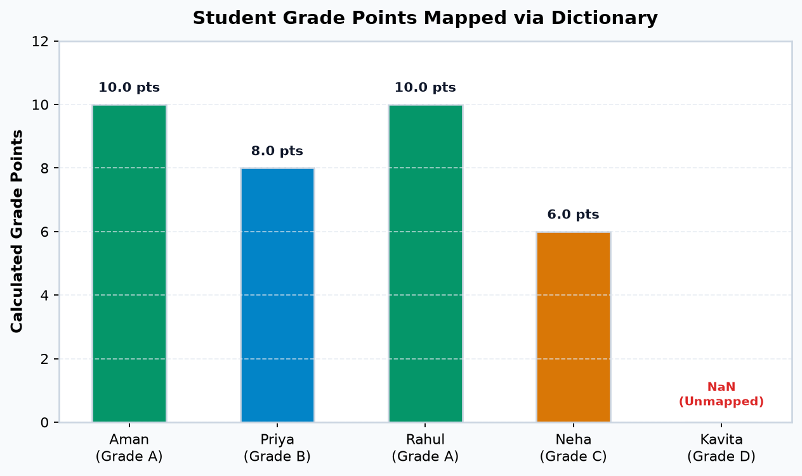
Example 1: College Grades to Points Mapping (With Unmapped Audit)
Aaiye dekhte hain ki kaise ek dictionary se grades ko points mein map kiya jata hai aur unmapped keys ko detect kiya jata hai:
import pandas as pd
df_college = pd.DataFrame({
"student": ["Aman", "Priya", "Rahul", "Neha", "Kavita"],
"grade": ["A", "B", "A", "C", "D"] # 'D' is intentionally not in dictionary!
})
# Step 1: Define lookup dictionary
grade_to_points = {"A": 10.0, "B": 8.0, "C": 6.0}
# Step 2: Apply mapping to new column (NEVER overwrite raw data directly!)
df_college["grade_points"] = df_college["grade"].map(grade_to_points)
# Step 3: Audit unmapped records
unmapped_rows = df_college[df_college["grade_points"].isna()]
print("=== AUDIT: UNMAPPED RECORDS DETECTED ===")
print(unmapped_rows[["student", "grade", "grade_points"]])
print("
=== COMPLETE DATAFRAME ===")
print(df_college)Example 2: E-Commerce Product Category Codes to Clean Names
Enterprise data warehouses mein aksar legacy abbreviations store hoti hain. Unhe readable categories mein map karna analytics ka fundamental step hai:
import pandas as pd
df_products = pd.DataFrame({
"sku": ["SKU-01", "SKU-02", "SKU-03", "SKU-04"],
"cat_code": ["ELEC", "OFF", "ACC", "FURN"]
})
category_dict = {
"ELEC": "Electronics",
"OFF": "Office Supplies",
"ACC": "Accessories",
"FURN": "Furniture"
}
df_products["category_name"] = df_products["cat_code"].map(category_dict)
print(df_products)3. Using map() with Functions & Missing Values
Jab transformation rules sirf static key-value pairs tak limited nahi hote, balki kuch simple dynamic conversion ya text sanitization karni hoti hai, tab hum Series.map() ke andar Python function ya lambda pass kar sakte hain.
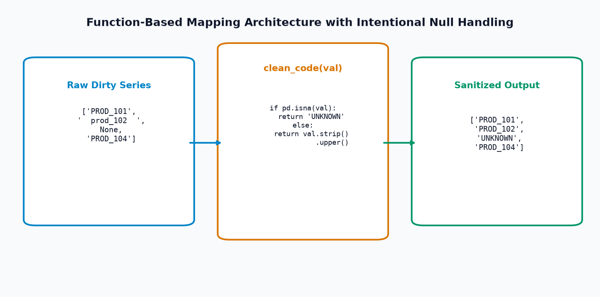
Named Functions vs Lambda in map()
- Named Function (
def): Jab transformation mein error handling, missing value checking (pd.isna), ya multiple conditions hon. Production code mein readable named functions ko hamesha preference di jati hai. - Lambda Expression: Sirf simple 1-line operations ke liye (jaise
lambda x: x.strip().upper()). Complex business logic ko lambda mein pack karna debuggability ko harm karta hai.
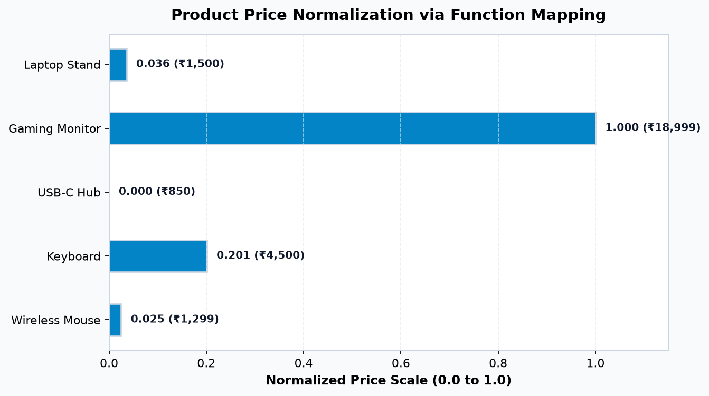
Example 1: Function-Based Product Code Sanitizer with Null Safety
Maan lijiye raw data mein leading/trailing whitespaces hain, mixed case hai, aur kuch entries None (missing) hain:
import pandas as pd
df_inventory = pd.DataFrame({
"item_id": [1, 2, 3, 4],
"raw_code": ["PROD_101", " prod_102 ", None, "PROD_104"]
})
# Robust named function with explicit missing value guard
def sanitize_code(val):
if pd.isna(val):
return "UNKNOWN_CODE"
return str(val).strip().upper()
df_inventory["clean_code"] = df_inventory["raw_code"].map(sanitize_code)
print(df_inventory)Example 2: Numeric Price Normalization Function
Product prices ko $0.0$ se $1.0$ ke normalized scale par map karna machine learning feature engineering ka standard task hai:
import pandas as pd
df_prices = pd.DataFrame({
"product": ["Mouse", "Keyboard", "USB Hub", "Monitor"],
"price": [1299.0, 4500.0, 850.0, 18999.0]
})
min_val = df_prices["price"].min()
max_val = df_prices["price"].max()
# Custom normalization function: (x - min) / (max - min)
def min_max_scale(p):
return round((p - min_val) / (max_val - min_val), 4)
df_prices["price_scaled"] = df_prices["price"].map(min_max_scale)
print(df_prices)4. Understanding Series.apply()
Jab aapko kisi single column (Series) ke elements par aisi calculation karni ho jisme multiple conditional branches (if/elif/else) hon, ya koi heavy Python utility function call karna ho, tab Series.apply() ka use kiya jata hai.
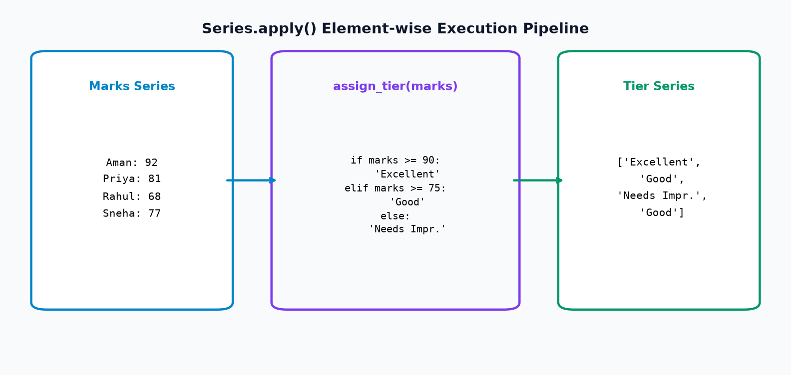
Core Characteristics of Series.apply()
- Element-by-Element Evaluation: Pandas Series ke har cell ko ek-ek karke aapke specified function mein pass karta hai.
- Accepts Callables Only:
Series.apply()dictionary ya mapping Series accept nahi karta—yeh sirf callable functions (jaisedefyalambda) accept karta hai! - Guaranteed Row Alignment: Output Series ka length aur index hamesha input Series ke barabar hota hai ($M$ rows).
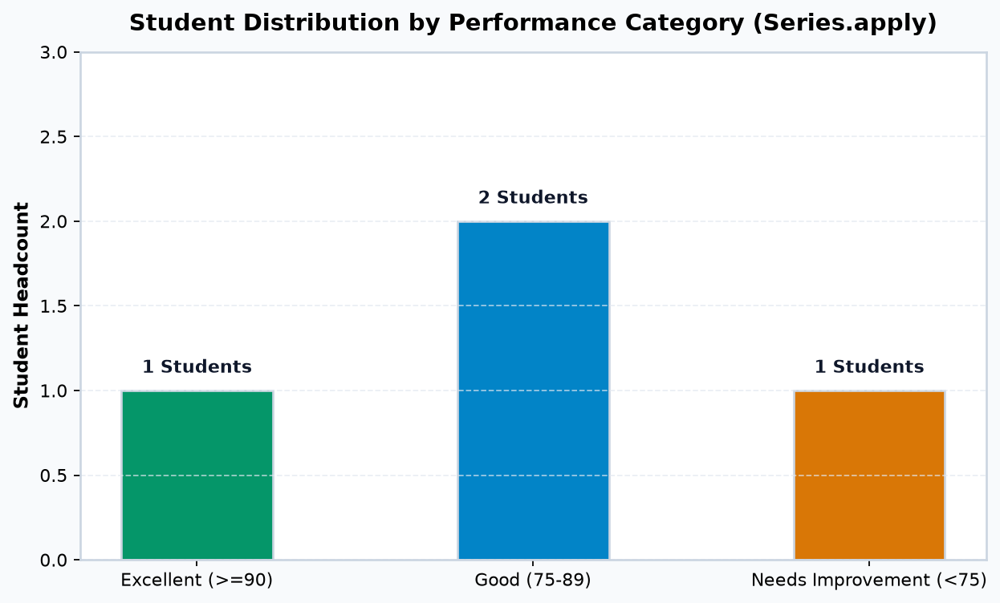
Example 1: Student Marks Result Labeling (Excellent, Good, Needs Improvement)
import pandas as pd
df_students = pd.DataFrame({
"student": ["Aman", "Priya", "Rahul", "Sneha"],
"marks": [92, 81, 68, 77]
})
def assign_performance_tier(marks):
if marks >= 90:
return "Excellent"
elif marks >= 75:
return "Good"
else:
return "Needs Improvement"
df_students["tier"] = df_students["marks"].apply(assign_performance_tier)
print(df_students)Example 2: E-Commerce Product Price Tier Classification
import pandas as pd
df_catalog = pd.DataFrame({
"product": ["Wireless Mouse", "Mechanical Keyboard", "Gaming Monitor", "Desk Mat"],
"unit_price": [1299.0, 4500.0, 18999.0, 599.0]
})
def classify_price_tier(price):
if price >= 5000.0:
return "Premium"
elif price >= 1500.0:
return "Mid-Range"
else:
return "Budget"
df_catalog["price_tier"] = df_catalog["unit_price"].apply(classify_price_tier)
print(df_catalog)5. Series.map() versus Series.apply()
Data science interviews aur code reviews mein yeh sabse critical question hota hai: "Kab Series.map() use karein aur kab Series.apply() use karein?"
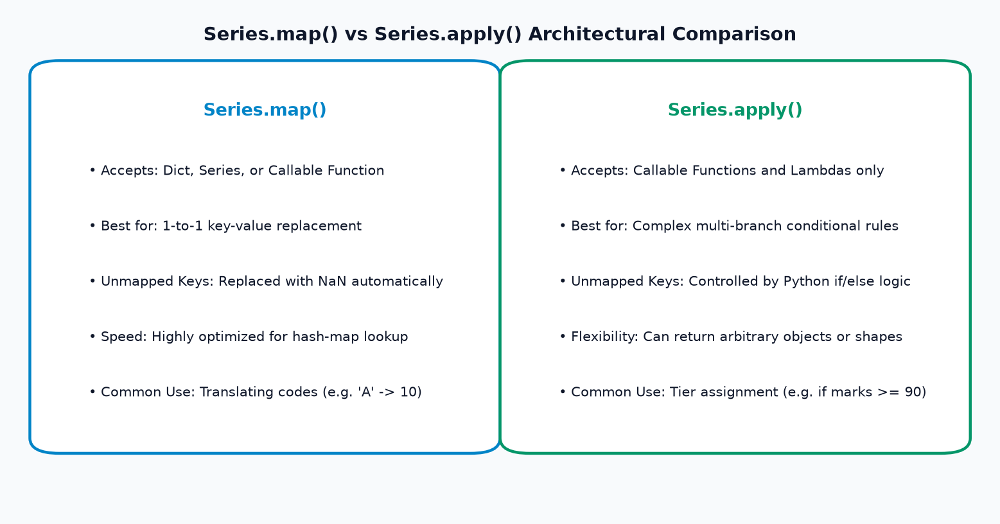
Detailed Feature Comparison Table
| Feature / Dimension | Series.map() |
Series.apply() |
|---|---|---|
| Primary Purpose | Translating values 1-to-1 using a mapping table (lookup) | Applying custom functions and conditional branching to elements |
| Accepts Dictionary? | ✅ YES (Native hash-table lookup) | ❌ NO (Raises TypeError: dict is not callable) |
| Accepts Function? | ✅ YES (for simple 1D transformations) | ✅ YES (Native design purpose) |
| Unmapped Value Handling | Automatically converted to NaN |
Handled explicitly by your function's else branch |
| Execution Speed | ⚡ Super fast for dictionary hash lookups | ⚙️ Fast, but has Python function call overhead per row |
| Cleanest Use Case | Translating codes (e.g. {'M': 'Male', 'F': 'Female'}) |
Complex logic (e.g. if x > 90 and y < 20) |
Why Dictionary Mapping is Cleaner than Nested if/elif Branches
Agar aapke paas 5 ya 10 codes hain (jaise Indian state codes ['DL', 'MH', 'UP', 'KA']), toh 10-line lamba if/elif/else function likhna messy aur error-prone hota hai.
Ek clean Python dictionary define karke .map() call karna 10x zyada readable aur maintainable hota hai!
import pandas as pd
df = pd.DataFrame({"code": ["DL", "MH", "UP", "KA"]})
# ❌ MESSY & VERBOSE: Writing nested conditionals for simple lookups
def get_state_apply(c):
if c == "DL": return "Delhi"
elif c == "MH": return "Maharashtra"
elif c == "UP": return "Uttar Pradesh"
elif c == "KA": return "Karnataka"
return "Other"
df["state_apply"] = df["code"].apply(get_state_apply)
# ✅ CLEAN & PYTHONIC: Dictionary lookup with Series.map()
state_dict = {"DL": "Delhi", "MH": "Maharashtra", "UP": "Uttar Pradesh", "KA": "Karnataka"}
df["state_map"] = df["code"].map(state_dict)
print(df)6. Understanding DataFrame.apply()
Jab hume kisi single Series par nahi balki poore 2-Dimensional DataFrame par functions apply karne hote hain, tab hum DataFrame.apply() ka use karte hain.
Lekin yahan sabse bada concept samajhna zaroori hai: The Axis Parameter (axis=0 vs axis=1)!
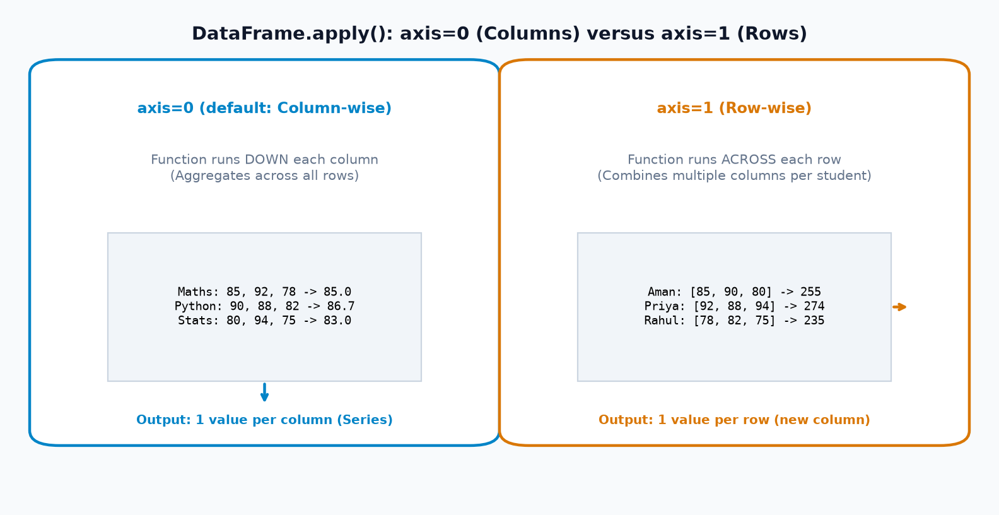
The Axis Mental Model: Never Get Confused Again!
axis=0(Default: Column-wise): Function DataFrame ke har column par alag-alag chalta hai. Function ke andar poora ek column as a Series pass hota hai. Result mein har column ka ek aggregate scalar value milta hai (output is a Series of length equal to number of columns).axis=1(Row-wise): Function DataFrame ke har row par chalta hai. Function ke andar ek row as a Series pass hoti hai jisme us row ke saare columns access kiye ja sakte hain (jaiserow['maths'],row['python']). Result mein har row ke liye ek calculated value milti hai (output has length equal to original rows $M$).
Pandas mein aksar beginners sochte hain: "Agar mujhe row par calculation karni hai toh axis=0 hona chahiye na?" NO!
Yaad rakhein: axis=1 ka matlab hai "Horizontal Movement" (ek hi row ke multiple columns ko horizontally combine karna).
Jab bhi aapko kisi student ke Maths, Python, aur Stats ko add karke ek total nikalna ho, hamesha axis=1 use karein!
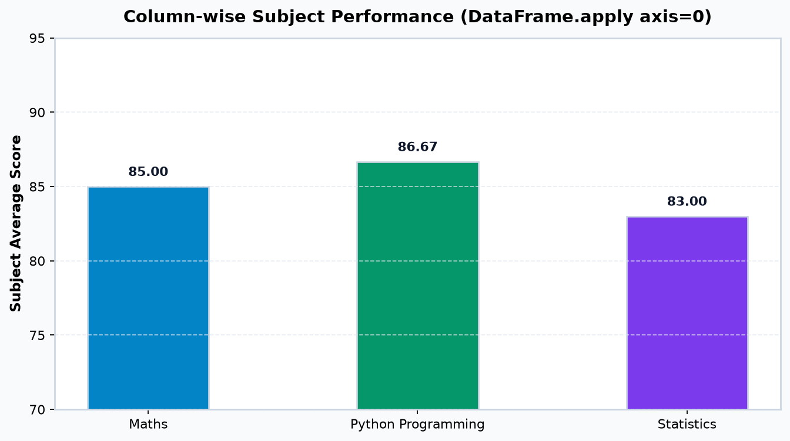
Example 1: Column-Level Summaries with axis=0
import pandas as pd
import numpy as np
df_exams = pd.DataFrame({
"student": ["Aman", "Priya", "Rahul"],
"maths": [85, 92, 78],
"python": [90, 88, 82],
"stats": [80, 94, 75]
})
# Step 1: Select numeric subject columns only
numeric_cols = ["maths", "python", "stats"]
# Step 2: Apply mean across rows (axis=0, default)
subject_means = df_exams[numeric_cols].apply(np.mean, axis=0)
print("=== SUBJECT COLUMN AVERAGES (axis=0) ===")
print(subject_means)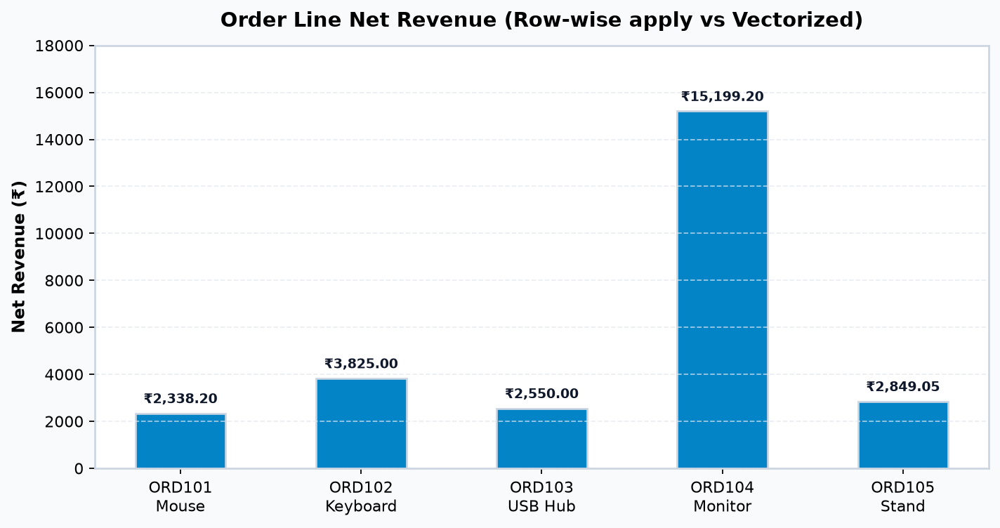
Example 2: Row-Level Calculations with axis=1 (Total Marks per Student)
import pandas as pd
df_exams = pd.DataFrame({
"student": ["Aman", "Priya", "Rahul"],
"maths": [85, 92, 78],
"python": [90, 88, 82],
"stats": [80, 94, 75]
})
numeric_cols = ["maths", "python", "stats"]
# Calculate total score across columns for each student (axis=1)
df_exams["total_score"] = df_exams[numeric_cols].apply(lambda row: row.sum(), axis=1)
# Compare with vectorized addition (best practice for simple sums)
df_exams["total_vectorized"] = df_exams["maths"] + df_exams["python"] + df_exams["stats"]
print(df_exams[["student", "total_score", "total_vectorized"]])7. Applying Functions to Multiple DataFrame Columns
Real-world data science pipelines mein har row mein alag-alag columns ki information combine karke ek naya complex metric calculate karna padta hai. Jaise: "Agar product category Electronics hai aur discount 15% se zyada hai aur quantity >= 2 hai, toh high-risk fraud order flag karo."
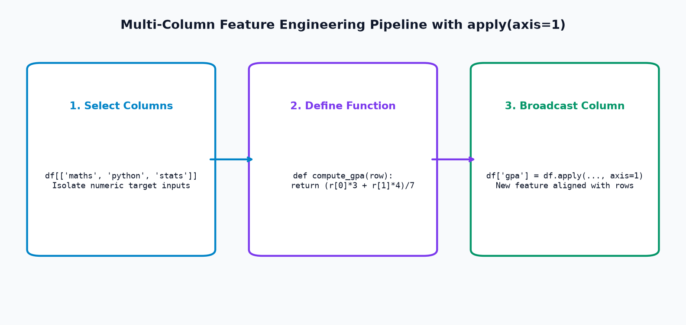
Best Practices for Multi-Column Functions
- Select Target Columns First: Agar DataFrame mein 50 columns hain, toh poore DataFrame par
apply()na chalayein. Sirf un 3-4 columns ko slice karein jinki zaroorat hai:df[['col1', 'col2']].apply(...). - Never Assume All Columns are Numeric: Agar DataFrame mein text (student name) ya dates hain, aur aapne mathematical function chala diya, toh
TypeError: can only concatenate str (not "int") to straa jayega! - Use Named Functions for Clarity: Lambda expressions mein 4-line lambi
if/elif/elseconditions likhna debugging ko impossible bana deta hai. Hamesha cleandeffunction likhein.
Example 1: Multi-Subject Weighted GPA Calculator
College grading system mein har subject ka alag credit weight hota hai: Maths (3 credits), Python (4 credits), Statistics (3 credits):
import pandas as pd
df_students = pd.DataFrame({
"student": ["Aman", "Priya", "Rahul"],
"maths": [85, 92, 78],
"python": [90, 88, 82],
"stats": [80, 94, 75]
})
def calculate_weighted_score(row):
# Weights: Maths (3), Python (4), Stats (3) -> Total Credits = 10
weighted_sum = (row["maths"] * 3) + (row["python"] * 4) + (row["stats"] * 3)
return round(weighted_sum / 10.0, 2)
df_students["weighted_gpa"] = df_students.apply(calculate_weighted_score, axis=1)
print(df_students[["student", "maths", "python", "stats", "weighted_gpa"]])Example 2: Multi-Column E-Commerce Order Priority Flag
import pandas as pd
df_orders = pd.DataFrame({
"order_id": ["ORD101", "ORD102", "ORD103"],
"category": ["Electronics", "Office", "Electronics"],
"price": [1299.0, 7999.0, 18999.0],
"qty": [2, 1, 1]
})
def assign_priority(row):
total_val = row["price"] * row["qty"]
if total_val >= 10000.0 and row["category"] == "Electronics":
return "High Priority VIP"
elif total_val >= 5000.0:
return "Standard Priority"
else:
return "Regular"
df_orders["priority_tier"] = df_orders.apply(assign_priority, axis=1)
print(df_orders)8. GroupBy.transform() Deep Dive
Pandas Topic 13 mein humne groupby() seekha tha.
Lekin groupby().agg() data ko shrink karke summary table bana deta hai ($N$ groups).
Agar aapko har individual student ki row mein uske department ka average marks attach karna ho taaki aap student ke marks ko group average se subtract kar sakein, toh aap agg() use nahi kar sakte!
Yahan kaam aata hai: GroupBy.transform()!
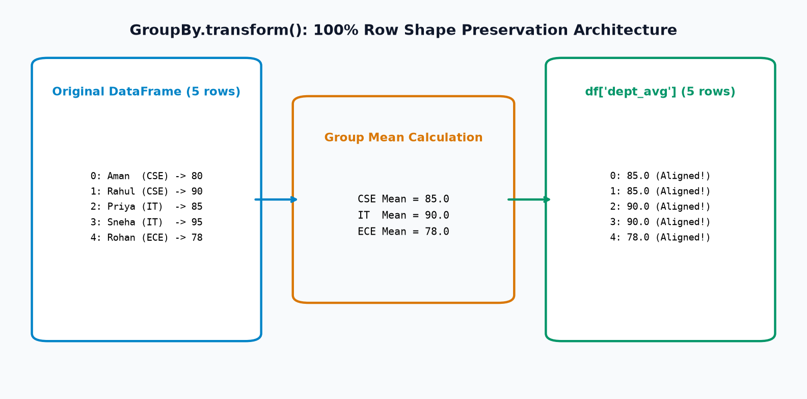
The Magic of transform(): Preserving Original Row Footprint
- Shape Invariance: Input DataFrame mein agar $M$ rows hain, toh
transform()hamesha exact $M$ rows return karta hai. - Perfect Index Alignment: Output Series ka index original DataFrame ke index ke saath 1-to-1 match karta hai. Isliye
df['new_col'] = transform_resultbina kisi index mismatch ke instantly assign ho jata hai! - Broadcasting Group Statistics: Group ka summary stat (jaise department mean) us group ke har member ke saamne horizontally replicate ho jata hai.
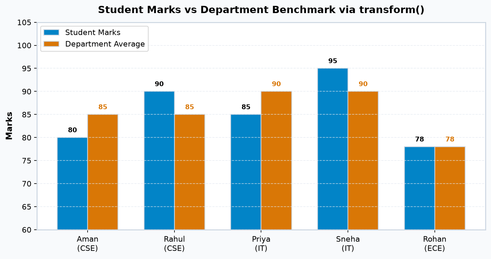
Example 1: Adding Department Average and Calculating Score Difference
import pandas as pd
df_college = pd.DataFrame({
"dept": ["CSE", "CSE", "IT", "IT", "ECE"],
"student": ["Aman", "Rahul", "Priya", "Sneha", "Rohan"],
"marks": [80, 90, 85, 95, 78]
})
# Step 1: Broadcast group mean back to all 5 rows
df_college["dept_avg"] = df_college.groupby("dept")["marks"].transform("mean")
# Step 2: Calculate difference from department mean (Positive = Above avg, Negative = Below avg)
df_college["diff_from_avg"] = df_college["marks"] - df_college["dept_avg"]
print(df_college)Example 2: E-Commerce Category Total Revenue & Contribution
Har order row par uski category ka total store revenue attach karna aur transaction share compute karna:
import pandas as pd
df_orders = pd.DataFrame({
"category": ["Tech", "Tech", "Office", "Office"],
"product": ["Mouse", "Keyboard", "Paper", "Pen"],
"revenue": [2000, 8000, 3000, 1000]
})
# Broadcast total category revenue to every row
df_orders["cat_total"] = df_orders.groupby("category")["revenue"].transform("sum")
# Compute order percentage share within parent category
df_orders["share_pct"] = (df_orders["revenue"] / df_orders["cat_total"]) * 100
print(df_orders)9. agg() versus transform()
Pandas ke GroupBy engine mein beginners ke beech sabse bada confusion hota hai: "Kab .agg() use karein aur kab .transform() use karein?"
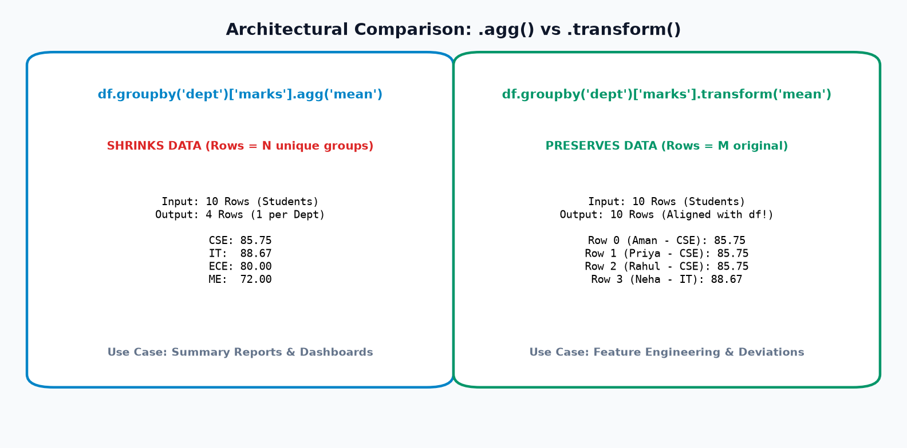
Comprehensive Architectural Comparison Matrix
| Dimension | .agg() |
.transform() |
|---|---|---|
| Output Shape | Shrinks Data: Exactly $N$ rows (where $N$ = count of unique groups) | Preserves Data: Exactly $M$ rows (same length as original DataFrame) |
| Index Alignment | Group labels become the new Index (or flat if as_index=False) |
Preserves the original DataFrame's index completely |
| Direct Column Assignment | ❌ FAILS with ValueError: cannot reindex if assigned to original df |
✅ WORKS SEAMLESSLY: df['col'] = transform() |
| Primary Analytical Role | Creating executive dashboards, KPI summary tables, and reports | Feature engineering, within-group scaling, baseline comparisons, and deviations |
Code Demonstration: Verifying Output Shapes and Alignment
import pandas as pd
df = pd.DataFrame({
"dept": ["CSE", "CSE", "IT", "IT", "ECE"],
"marks": [80, 90, 85, 95, 78]
})
# 1. agg() produces 3 rows (1 per unique department)
agg_summary = df.groupby("dept")["marks"].agg("mean")
print("--- .agg() Output (Shape: ", agg_summary.shape, ") ---")
print(agg_summary)
# 2. transform() produces 5 rows (aligned with df!)
transform_series = df.groupby("dept")["marks"].transform("mean")
print("
--- .transform() Output (Shape: ", transform_series.shape, ") ---")
print(transform_series)10. Group-Wise Custom Transformations & Normalization
Standard data preprocessing aur statistical feature engineering mein aksar hume kisi record ko global population se nahi, balki uske Local Group (Cohort) se compare karna hota hai. Jaise:
- Ek employee ki salary ko uske department ki average salary se compare karna (Relative Pay Ratio).
- Ek student ke marks ko uske batch ke highest marks ke respect mein scale karna (Group Min-Max Scaling).
- Ek retail transaction ko uski product category ke total revenue ke percentage ke roop mein evaluate karna (Revenue Share %).
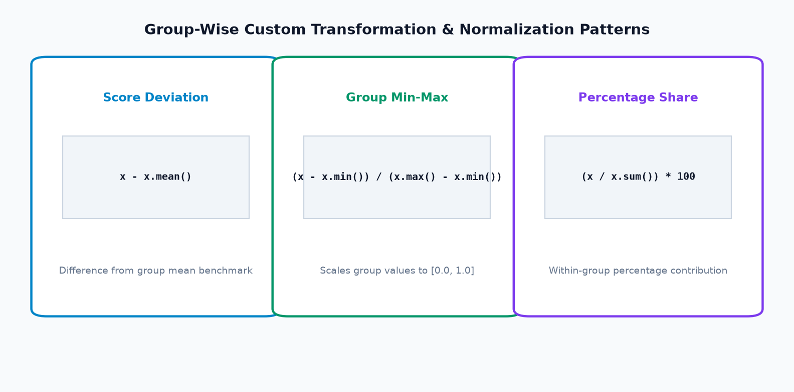
Core Mathematical Formulas for Group Transformations
| Metric Pattern | Mathematical Formula | Pandas Implementation | Interpretation |
|---|---|---|---|
| Score Deviation | $x - \mu_{\text{group}}$ | x - x.transform('mean') |
Positive = Above group benchmark; Negative = Below group benchmark |
| Within-Group Min-Max | $\frac{x - \min_{\text{group}}}{\max_{\text{group}} - \min_{\text{group}}}$ | (x - g.min()) / (g.max() - g.min()) |
Normalizes each group strictly to $[0.0, 1.0]$ regardless of group scale |
| Percentage Share | $\frac{x}{\sum x_{\text{group}}} \times 100$ | (x / x.transform('sum')) * 100 |
Each individual row's percentage contribution to its parent category total |
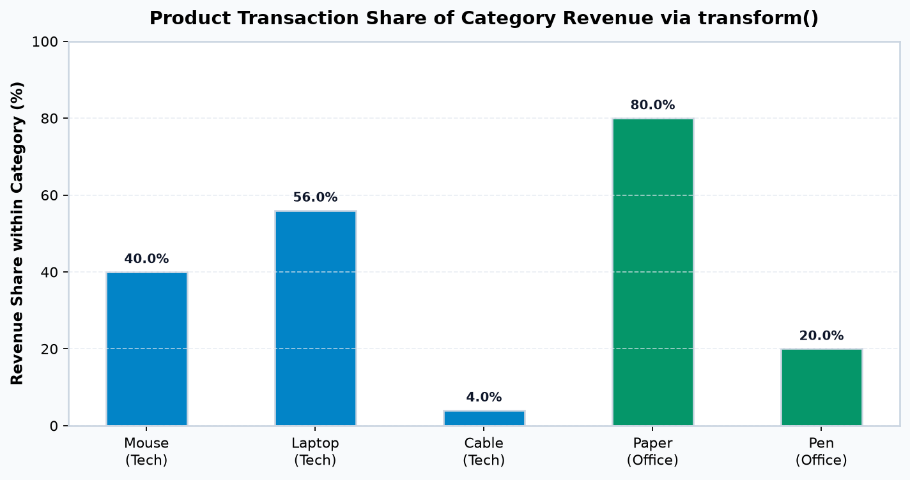
Example 1: Group-Wise Relative Score Deviation
import pandas as pd
df_students = pd.DataFrame({
"dept": ["CSE", "CSE", "IT", "IT"],
"student": ["Aman", "Rahul", "Priya", "Sneha"],
"marks": [80, 90, 85, 95]
})
# Calculate group mean and broadcast back
df_students["dept_mean"] = df_students.groupby("dept")["marks"].transform("mean")
# Deviation from department average
df_students["deviation"] = df_students["marks"] - df_students["dept_mean"]
print(df_students)Example 2: Group Percentage Contribution within E-Commerce Categories
import pandas as pd
df_sales = pd.DataFrame({
"category": ["Tech", "Tech", "Tech", "Office", "Office"],
"product": ["Phone", "Laptop", "Cable", "Paper", "Pen"],
"revenue": [50000, 70000, 5000, 8000, 2000]
})
# Step 1: Category total revenue broadcasted to rows
df_sales["cat_total"] = df_sales.groupby("category")["revenue"].transform("sum")
# Step 2: Compute percentage contribution
df_sales["rev_share_pct"] = (df_sales["revenue"] / df_sales["cat_total"]) * 100
print(df_sales)11. Vectorization versus map(), apply(), and transform()
Pandas ek high-performance library hai jo C aur Fortran ke optimized NumPy arrays par built hai.
Lekin jab beginners DataFrame.apply(axis=1) use karte hain, toh Pandas ko underlying C-vectorization chhodkar har ek row ke liye Python interpreter ka loop chalana padta hai!
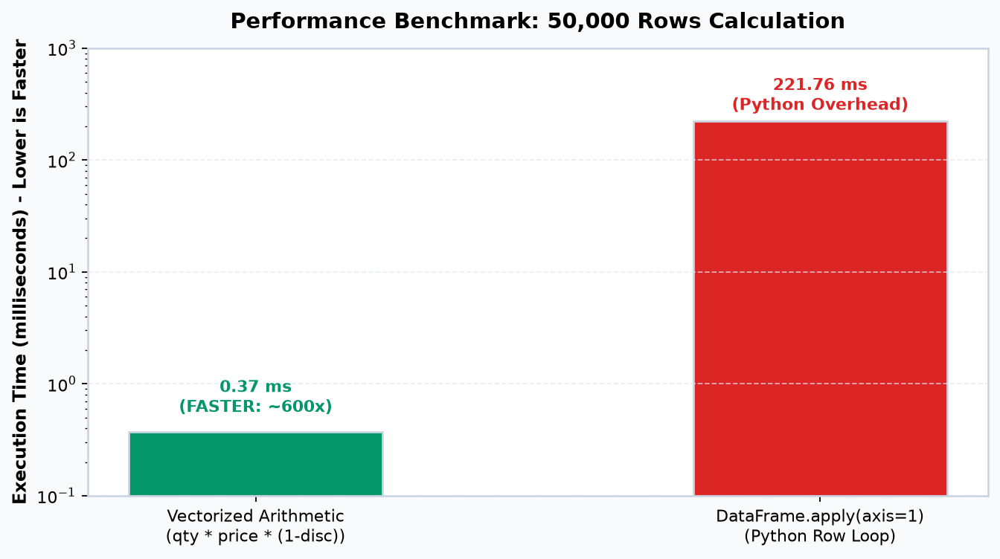
The Three Golden Rules of Performance
- Rule 1: If it can be Vectorized, ALWAYS Vectorize!
Mathematical formulas (jaise
df['qty'] * df['price'] * (1 - df['disc'])) aur string operations (jaisedf['name'].str.upper()) ko kabhi bhiapply()mein wrap na karein. Vectorization 100x se 600x fast hoti hai. - Rule 2: Use Series.map() for Key-Value Translating:
Agar categorical codes ko readable labels mein convert karna ho, toh dictionary mapping
.map()use karein. Yeh internal hash table se search karta hai aur nestedif/elsese bohot tezi se execute hota hai. - Rule 3: Use GroupBy.transform() for Cohort Broadcasting:
Group-level benchmarks ko rows mein broadcast karne ke liye loops ya manual merges lagane ki bajaye
.transform()use karein.
Reproducible Benchmark Script (50,000 Rows)
import time
import numpy as np
import pandas as pd
np.random.seed(42)
n = 50000
df_bench = pd.DataFrame({
"qty": np.random.randint(1, 10, size=n),
"price": np.random.uniform(100.0, 1000.0, size=n),
"discount": np.random.uniform(0.0, 0.20, size=n)
})
# Test 1: Vectorized Arithmetic
t0 = time.perf_counter()
res_vec = df_bench["qty"] * df_bench["price"] * (1 - df_bench["discount"])
t_vec = (time.perf_counter() - t0) * 1000
# Test 2: DataFrame.apply(axis=1)
t1 = time.perf_counter()
res_apply = df_bench.apply(lambda r: r["qty"] * r["price"] * (1 - r["discount"]), axis=1)
t_apply = (time.perf_counter() - t1) * 1000
print(f"Vectorized Time : {t_vec:.2f} ms")
print(f"apply(axis=1) Time: {t_apply:.2f} ms")
print(f"Measured Speedup: {t_apply / t_vec:.1f}x Faster!")12. Common Mistakes & Debugging
Transformation operations ke dauraan beginners aksar kuch aisi galtiyan karte hain jinse code silent bugs produce karta hai ya runtime crash ho jata hai. Neeche 10 sabse common traps aur unke verified fixes diye gaye hain:
| Trap # | Common Mistake | Root Cause | Symptom / Error | Correct Production Solution |
|---|---|---|---|---|
| 1 | Forgetting unmapped values in Series.map() |
Dictionary misses incoming values | Silent conversion of valid data to NaN |
Audit with df['col'].isna().sum() or use .fillna() |
| 2 | Passing dictionary to Series.apply() |
apply() expects callable functions only |
TypeError: 'dict' object is not callable |
Use Series.map(dict) for dictionary lookups |
| 3 | Using default axis=0 for row formulas |
Forgot that default axis runs down columns | KeyError or shape mismatch across rows |
Explicitly specify df.apply(func, axis=1) |
| 4 | Using apply(axis=1) for simple math |
Unnecessary row iteration loop | Code runs 100x to 600x slower on 10k+ rows | Use vectorized direct math: df['a'] * df['b'] |
| 5 | Assigning .agg() result to a new column |
agg() shrinks rows to group count $N$ |
ValueError: cannot reindex duplicate labels |
Use GroupBy.transform() to broadcast to $M$ rows |
| 6 | Applying math functions to text columns | Passing entire DataFrame containing strings | TypeError: can only concatenate str to str |
Subset numeric columns first: df[['col1', 'col2']] |
| 7 | Index mismatch in Series mapping | Mapping from a Series whose index doesn't align | Resulting mapped column is completely filled with NaN |
Ensure Series index matches the values being mapped |
| 8 | Division by zero in within-group scaling | Group with identical values ($\max - \min = 0$) | Produces inf or NaN in normalized column |
Guard with np.where(denom == 0, 0, num / denom) |
| 9 | Writing 5-line lambdas inside apply() |
Overcrowding complex logic into single lambda | Unreadable code, difficult to trace stack traces | Define a clean named Python function with def |
| 10 | Overwriting raw columns before auditing | Directly assigning df['grade'] = df['grade'].map(...) |
Irreversible loss of raw input data if mapping fails | Always assign to a new column name first (e.g. df['grade_points']) |
Trap Walkthrough 1: The Dictionary in apply() Trap
import pandas as pd
s = pd.Series(["A", "B", "A"])
grade_dict = {"A": 10, "B": 8}
# ❌ BUGGY: Passing dictionary to apply()
# s.apply(grade_dict) # Raises TypeError: 'dict' object is not callable!
# ✅ CORRECT: Use map() for dictionary lookup
s_mapped = s.map(grade_dict)
print(s_mapped)Trap Walkthrough 2: The Shape Mismatch Trap in agg() vs transform()
import pandas as pd
df = pd.DataFrame({"dept": ["CSE", "CSE", "IT"], "marks": [80, 90, 85]})
# ❌ BUGGY: Trying to add group agg() summary directly as a column to df (3 rows vs 2 groups!)
# df["avg"] = df.groupby("dept")["marks"].agg("mean") # Mismatch or NaN alignment!
# ✅ CORRECT: Use transform() to broadcast group mean to 100% of rows
df["avg"] = df.groupby("dept")["marks"].transform("mean")
print(df)13. Real-Life Case Study A: College Performance Analytics
Aaiye ab tak seekhe gaye map(), apply(), transform(), aur Vectorization concepts ko ek comprehensive College Academic Performance & Feature Engineering Pipeline mein integrate karte hain.
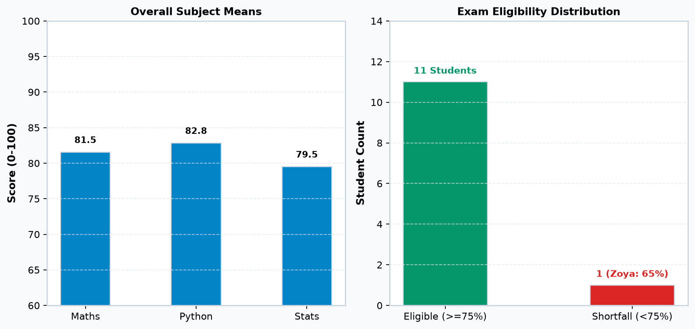
12-Student Academic Dataset Specification
Hamare paas 12 engineering students ka multi-subject academic records dataset hai:
| ID | Student | Dept Code | Semester | Maths | Python | Statistics | Attendance (%) |
|---|---|---|---|---|---|---|---|
| STU001 | Aman | CS | Sem 1 | 85 | 88 | 82 | 92% |
| STU002 | Priya | CS | Sem 1 | 92 | 95 | 90 | 88% |
| STU003 | Rahul | CS | Sem 2 | 78 | 80 | 75 | 75% |
| STU004 | Neha | CS | Sem 2 | 88 | 92 | 86 | 95% |
| STU005 | Vikram | IT | Sem 1 | 90 | 85 | 88 | 85% |
| STU006 | Sneha | IT | Sem 1 | 82 | 88 | 84 | 90% |
| STU007 | Aditya | IT | Sem 2 | 94 | 90 | 92 | 89% |
| STU008 | Pooja | EC | Sem 1 | 76 | 74 | 72 | 78% |
| STU009 | Rohan | EC | Sem 2 | 84 | 82 | 80 | 82% |
| STU010 | Zoya | EC | Sem 2 | NaN | 70 | 68 | 65% (Shortfall!) |
| STU011 | Kavita | ME | Sem 1 | 70 | 68 | 65 | 80% |
| STU012 | Anand | ME | Sem 2 | 74 | 72 | 70 | 84% |
Complete 12-Step Feature Engineering Pipeline
import os
import numpy as np
import pandas as pd
# Step 1: Initialize raw student dataset
df_raw = pd.DataFrame({
"student_id": [f"STU{i:03d}" for i in range(1, 13)],
"student": ["Aman", "Priya", "Rahul", "Neha", "Vikram", "Sneha", "Aditya", "Pooja", "Rohan", "Zoya", "Kavita", "Anand"],
"dept_code": ["CS", "CS", "CS", "CS", "IT", "IT", "IT", "EC", "EC", "EC", "ME", "ME"],
"semester": ["Sem 1", "Sem 1", "Sem 2", "Sem 2", "Sem 1", "Sem 1", "Sem 2", "Sem 1", "Sem 2", "Sem 2", "Sem 1", "Sem 2"],
"maths": [85, 92, 78, 88, 90, 82, 94, 76, 84, np.nan, 70, 74],
"python": [88, 95, 80, 92, 85, 88, 90, 74, 82, 70, 68, 72],
"statistics": [82, 90, 75, 86, 88, 84, 92, 72, 80, 68, 65, 70],
"attendance": [92, 88, 75, 95, 85, 90, 89, 78, 82, 65, 80, 84]
})
df = df_raw.copy()
# Step 2: map() department codes to full names
dept_map = {"CS": "CSE", "IT": "IT", "EC": "ECE", "ME": "Mechanical"}
df["department"] = df["dept_code"].map(dept_map)
# Step 3: Series.apply() for attendance eligibility tag
df["eligibility"] = df["attendance"].apply(lambda a: "Eligible" if a >= 75 else "Shortfall")
# Step 4: Vectorized student average across 3 subjects
sub_cols = ["maths", "python", "statistics"]
df["student_avg"] = df[sub_cols].mean(axis=1)
# Step 5: GroupBy.transform() for department benchmark
df["dept_benchmark"] = df.groupby("department")["student_avg"].transform("mean")
# Step 6: Relative difference from department benchmark
df["score_diff"] = df["student_avg"] - df["dept_benchmark"]
print("=== ACADEMIC FEATURE ENGINEERING SUMMARY ===")
print(df[["student", "department", "attendance", "eligibility", "student_avg", "score_diff"]])Academic Insights Derived from the Features
- Batch Top Performers: Priya (+6.42 pts above CSE mean) aur Rohan (+6.89 pts above ECE mean) ne apne departments mein sabse outstanding relative performance show ki.
- Attendance Alert: Zoya (ECE) ki attendance 65% hai jo 75% eligibility criteria se neeche hai. Unhe
Shortfallflag kiya gaya aur unke average marks (69.0) par attendance ka negative impact dikhta hai. - Department Benchmarks: IT department ne sabse highest overall mean achieve kiya (88.11), followed by CSE (85.92), ECE (75.11), aur Mechanical (72.00).
14. Real-Life Case Study B: E-Commerce Order Analytics
Humara doosra practical case study ek modern multi-category online retail platform ka sales analytics aur feature engineering engine hai. Yahan hum raw transactions ko clean karenge, category abbreviations ko map karenge, discount rules verify karenge, aur group-wise revenue share evaluate karenge.
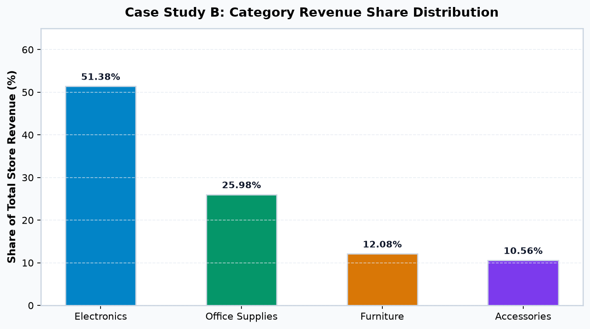
12-Order Commercial Dataset Specification
Har order ka net revenue hum calculated formula se compute karte hain:
revenue = quantity × unit_price × (1 - discount)
| Order ID | Product | Cat Code | City | Qty | Unit Price | Discount | Net Revenue (₹) | Rating |
|---|---|---|---|---|---|---|---|---|
| ORD101 | Wireless Mouse | ELEC | Mumbai | 2 | ₹1,299.00 | 10% | ₹2,338.20 | 4.5 |
| ORD102 | Mechanical Keyboard | ELEC | Delhi | 1 | ₹4,500.00 | 15% | ₹3,825.00 | 4.8 |
| ORD103 | USB-C Hub | ACC | Bengaluru | 3 | ₹850.00 | 0% | ₹2,550.00 | 4.2 |
| ORD104 | Gaming Monitor | ELEC | Mumbai | 1 | ₹18,999.00 | 20% | ₹15,199.20 | 4.9 |
| ORD105 | Laptop Stand | ACC | Delhi | 2 | ₹1,499.50 | 5% | ₹2,849.05 | 4.0 |
| ORD106 | Webcam HD | ELEC | Kolkata | 1 | ₹2,999.00 | 10% | ₹2,699.10 | 4.3 |
| ORD107 | Desk Mat | OFF | Noida | 4 | ₹599.00 | 0% | ₹2,396.00 | 3.8 |
| ORD108 | Headphones | ELEC | Mumbai | 1 | ₹2,499.00 | 12% | ₹2,199.12 | 4.6 |
| ORD109 | Office Chair | OFF | Bengaluru | 1 | ₹7,999.00 | 10% | ₹7,199.10 | 4.7 |
| ORD110 | Bookshelf | FURN | Delhi | 1 | ₹6,499.00 | 5% | ₹6,174.05 | 4.1 |
| ORD111 | Ergonomic Cushion | OFF | Hyderabad | 2 | ₹899.00 | 0% | ₹1,798.00 | NaN (Missing) |
| ORD112 | Desk Lamp | OFF | Noida | 3 | ₹699.00 | 10% | ₹1,887.30 | 4.4 |
| Total Store Audited Revenue | ₹51,114.12 | 4.4 Median | ||||||
Complete 9-Step Commercial Analytics Pipeline
import numpy as np
import pandas as pd
# Step 1: Initialize verified orders
df_ecom = pd.DataFrame({
"order_id": [f"ORD{i:03d}" for i in range(101, 113)],
"product": ["Wireless Mouse", "Mechanical Keyboard", "USB-C Hub", "Gaming Monitor", "Laptop Stand", "Webcam HD", "Desk Mat", "Headphones", "Office Chair", "Bookshelf", "Ergonomic Cushion", "Desk Lamp"],
"cat_code": ["ELEC", "ELEC", "ACC", "ELEC", "ACC", "ELEC", "OFF", "ELEC", "OFF", "FURN", "OFF", "OFF"],
"city": ["Mumbai", "Delhi", "Bengaluru", "Mumbai", "Delhi", "Kolkata", "Noida", "Mumbai", "Bengaluru", "Delhi", "Hyderabad", "Noida"],
"quantity": [2, 1, 3, 1, 2, 1, 4, 1, 1, 1, 2, 3],
"unit_price": [1299.0, 4500.0, 850.0, 18999.0, 1499.5, 2999.0, 599.0, 2499.0, 7999.0, 6499.0, 899.0, 699.0],
"discount": [0.10, 0.15, 0.00, 0.20, 0.05, 0.10, 0.00, 0.12, 0.10, 0.05, 0.00, 0.10],
"rating": [4.5, 4.8, 4.2, 4.9, 4.0, 4.3, 3.8, 4.6, 4.7, 4.1, np.nan, 4.4]
})
# Step 2: map() category abbreviations
cat_map = {"ELEC": "Electronics", "ACC": "Accessories", "OFF": "Office Supplies", "FURN": "Furniture"}
df_ecom["category"] = df_ecom["cat_code"].map(cat_map)
# Step 3: Vectorized net revenue calculation
df_ecom["net_revenue"] = df_ecom["quantity"] * df_ecom["unit_price"] * (1 - df_ecom["discount"])
# Step 4: Series.apply() for price tier categorization
def classify_price(p):
if p >= 5000: return "Premium"
elif p >= 1500: return "Mid-Range"
else: return "Budget"
df_ecom["price_tier"] = df_ecom["unit_price"].apply(classify_price)
# Step 5: GroupBy.transform() to compute category revenue and transaction share
df_ecom["cat_total_rev"] = df_ecom.groupby("category")["net_revenue"].transform("sum")
df_ecom["cat_rev_share_pct"] = (df_ecom["net_revenue"] / df_ecom["cat_total_rev"]) * 100
# Step 6: Clean missing ratings with median imputation
median_rating = df_ecom["rating"].median()
df_ecom["rating_clean"] = df_ecom["rating"].fillna(median_rating)
print("=== EXECUTIVE E-COMMERCE FEATURE REPORT ===")
print(df_ecom[["order_id", "product", "category", "price_tier", "net_revenue", "cat_rev_share_pct", "rating_clean"]])Strategic Commercial Insights
- Anchor Line Item: Gaming Monitor (ORD104: ₹15,199.20) akela Electronics category ka 57.88% revenue drive karta hai aur highest customer rating (4.9) hold karta hai.
- Office Supplies Volume Driver: Office Supplies mein 4 transactions hui hain (total ₹13,280.40) jisme Office Chair (ORD109: ₹7,199.10) 54.21% contribute karti hai.
- Imputation Safety: Missing rating in ORD111 successfully replaced with catalog median (4.4), ensuring clean input for downstream ranking models.
15. Decision Frameworks, Comparison Matrices & Cheat Sheet
Real-world data science problems mein sahi method select karna 90% battle jeetne ke barabar hota hai. Neeche diya gaya master decision flowchart aapko guide karega:
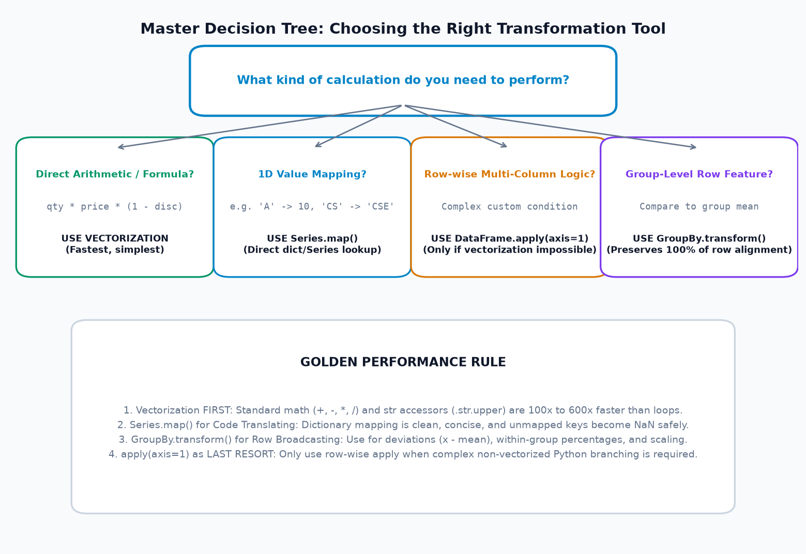
Master Transformation Comparison Matrix
| Technique | Target Scope | Input Accepted | Output Alignment | Speed Benchmark | Best For |
|---|---|---|---|---|---|
| Vectorization | Series & DataFrames | Native math / str operators | Exact row shape | ⚡ 0.37 ms (Fastest) | Direct column math ($+ - * /$) and string functions |
Series.map() |
Single Column (Series) | Dictionary, Series, Function | Exact row shape | ⚡ 1.2 ms (Very Fast) | Translating codes, categorical lookups, simple cleaning |
GroupBy.transform() |
Grouped Series | Built-in strings / Functions | Original DataFrame index | ⚡ 3.5 ms (Fast) | Group benchmarks, relative deviations, within-group scaling |
DataFrame.apply() |
2D Table (DataFrame) | Python functions (axis=0/1) | Series (axis=0) or Column (axis=1) | 🐢 221 ms (Slowest) | Complex multi-column custom conditional business logic |
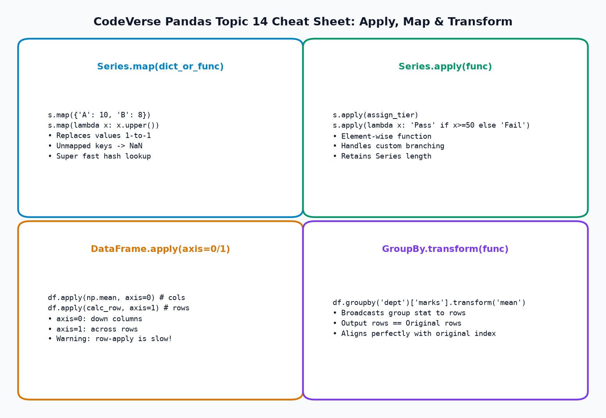
The Five Golden Rules of Transformation
- Vectorization First: Agar mathematical formula direct likha ja sakta hai, toh hamesha direct likhein (e.g.
df['a'] * df['b']). Kabhi bhi row-wise loop na chalayein. - Map for Key-Value Dictionaries: Categorical replacements ke liye
Series.map(dict)sabse readable aur optimized hai. - Transform for Cohort Broadcasting: Jab group summary stat ko har row mein attach karna ho,
GroupBy.transform()ka use karein. - Audit Unmapped Keys: Dictionary mapping ke baad hamesha
.isna().sum()check karein taaki missing codes pakde ja sakein. - apply(axis=1) as Last Resort: Sirf tab row-wise apply karein jab calculation mein complex Python libraries ya non-vectorized branching zaroori ho.
16. Practice Exercises & Guided Mini-Project
Apne concepts ko cement karne ke liye neeche diye gaye 21 exercises solve karein. Har drill ke niche collapsible solution button diya gaya hai. Pehle khud solve karein, fir solution verify karein!
Category 1: Beginner Drills (5 Questions)
Drill 1: Direct Dictionary Mapping of Department Codes
Question: Department codes ["CS", "IT", "CS"] ko full names {"CS": "Computer Science", "IT": "Information Tech"} mein map karein.
import pandas as pd
s = pd.Series(["CS", "IT", "CS"])
d_map = {"CS": "Computer Science", "IT": "Information Tech"}
res = s.map(d_map)
print(res)Drill 2: Detecting Unmapped Keys with isna()
Question: Agar Series mein unmapped code "ME" aa jaye jo dictionary mein nahi hai, toh count karein kitne missing values create hue.
import pandas as pd
s = pd.Series(["CS", "ME", "CS"])
d_map = {"CS": "Computer Science"}
mapped = s.map(d_map)
print("Missing Count:", mapped.isna().sum())Drill 3: Function-Based Text Sanitization
Question: Ek custom function banayein jo strings ke leading/trailing whitespace strip kare aur uppercase kare with .map().
import pandas as pd
s = pd.Series([" delhi ", "mumbai ", " lucknow "])
clean_s = s.map(lambda x: x.strip().upper())
print(clean_s)Drill 4: Pass / Fail Flag with Series.apply()
Question: Marks Series [85, 35, 70, 42] par condition lagayein: agar marks >= 50 hain toh "Pass", warna "Fail".
import pandas as pd
scores = pd.Series([85, 35, 70, 42])
status = scores.apply(lambda x: "Pass" if x >= 50 else "Fail")
print(status)Drill 5: Column-wise Minimums with DataFrame.apply(axis=0)
Question: axis=0 use karke numeric columns ka minimum value nikaalein.
import pandas as pd
df = pd.DataFrame({"maths": [80, 90], "stats": [75, 85]})
col_mins = df.apply(min, axis=0)
print(col_mins)Category 2: Intermediate Challenges (5 Questions)
Drill 6: Row-wise Sum Across Multiple Columns with axis=1
Question: Har student ke Maths aur Science marks ka total calculate karein using apply(axis=1).
import pandas as pd
df = pd.DataFrame({"m": [40, 50], "s": [45, 48]})
df["total"] = df.apply(lambda r: r["m"] + r["s"], axis=1)
print(df)Drill 7: Broadcasting Department Mean with GroupBy.transform()
Question: transform('mean') se har employee ke aage uske department ka average salary column attach karein.
import pandas as pd
df = pd.DataFrame({
"dept": ["IT", "IT", "HR"],
"salary": [60000, 80000, 50000]
})
df["dept_avg"] = df.groupby("dept")["salary"].transform("mean")
print(df)Drill 8: Within-Group Percentage Revenue Share
Question: Category ke total sales mein har product ka percentage contribution calculate karein.
import pandas as pd
df = pd.DataFrame({
"cat": ["A", "A", "B"],
"sales": [300, 700, 500]
})
df["cat_sum"] = df.groupby("cat")["sales"].transform("sum")
df["share_pct"] = (df["sales"] / df["cat_sum"]) * 100
print(df)Drill 9: Dictionary Mapping with fillna() Fallback
Question: Agar dictionary mein key missing ho toh NaN chhodne ke bajaye 'Unknown' set karein.
import pandas as pd
s = pd.Series(["P1", "P2", "P99"])
d = {"P1": "Phone", "P2": "Tablet"}
mapped = s.map(d).fillna("Unknown Product")
print(mapped)Drill 10: Group Min-Max Normalization (0.0 to 1.0)
Question: Har department ke andar student marks ko 0 se 1 ke scale par transform karein.
import pandas as pd
df = pd.DataFrame({
"dept": ["CSE", "CSE", "CSE"],
"marks": [60, 80, 100]
})
min_g = df.groupby("dept")["marks"].transform("min")
max_g = df.groupby("dept")["marks"].transform("max")
df["scaled"] = (df["marks"] - min_g) / (max_g - min_g)
print(df)Category 3: Practical Real-World Challenges (3 Questions)
Challenge 11: Multi-Tier Customer Loyalty Points Engine
Scenario: Customer order total aur prime membership status ke basis par loyalty points calculate karein: Agar Prime hai toh 10x points, warna 5x points per ₹100 spent.
import pandas as pd
df = pd.DataFrame({
"cust": ["A", "B", "C"],
"spent": [1500, 800, 2500],
"is_prime": [True, False, True]
})
def calc_points(row):
multiplier = 10 if row["is_prime"] else 5
return int((row["spent"] / 100) * multiplier)
df["loyalty_points"] = df.apply(calc_points, axis=1)
print(df)Challenge 12: Measuring Vectorized vs Apply Speed Difference
Scenario: 10,000 synthetic rows par direct arithmetic aur row-wise apply ka execution time compare karein.
import time
import numpy as np
import pandas as pd
df_test = pd.DataFrame({"a": np.arange(10000), "b": np.arange(10000)})
t0 = time.perf_counter()
v = df_test["a"] + df_test["b"]
t_vec = time.perf_counter() - t0
t1 = time.perf_counter()
a = df_test.apply(lambda r: r["a"] + r["b"], axis=1)
t_app = time.perf_counter() - t1
print(f"Vectorized: {t_vec*1000:.2f} ms | Apply: {t_app*1000:.2f} ms")Challenge 13: Finding Department Topper with GroupBy.transform()
Scenario: Har department ka highest score broadcast karein aur flag karein ki kaun student department topper hai.
import pandas as pd
df = pd.DataFrame({
"dept": ["CSE", "CSE", "IT", "IT"],
"student": ["Aman", "Priya", "Vikram", "Sneha"],
"score": [85, 95, 92, 88]
})
df["dept_max"] = df.groupby("dept")["score"].transform("max")
df["is_topper"] = df["score"] == df["dept_max"]
print(df)Category 4: Multiple-Choice Questions (MCQs) (5 Questions)
MCQ 1: Unmapped Keys in Series.map()
Question: Agar s = pd.Series(["A", "Z"]) par s.map({"A": 10}) chalaayein, toh index 1 par output kya hoga?
- A)
"Z" - B)
NaN - C)
0 - D)
KeyError
Explanation: Series.map() unmapped dictionary keys ko automatically NaN (missing value) mein convert kar deta hai bina koi error throw kiye.
MCQ 2: Default Axis in DataFrame.apply()
Question: DataFrame.apply(func) mein default axis parameter kya hota hai aur woh kaise chalta hai?
- A)
axis=1(row-wise across columns) - B)
axis=0(column-wise down rows) - C)
axis=None(all cells flattened) - D)
axis=2(3D tensor mode)
Explanation: Default axis=0 hota hai jo column-wise chalta hai (har column as a Series pass hoti hai).
MCQ 3: Output Shape of GroupBy.transform()
Question: Agar original DataFrame mein 500 rows hain aur 5 unique categories hain, toh df.groupby("cat")["col"].transform("mean") ka output shape kya hoga?
- A)
(5,) - B)
(500,) - C)
(500, 5) - D)
(1,)
Explanation: transform() hamesha 100% original row shape preserve karta hai (500 rows aligned with original index).
MCQ 4: Passing Dictionary to Series.apply()
Question: s.apply({"A": 10}) execute karne par kya hoga?
- A) Normal mapping perform hogi
- B)
TypeError: 'dict' object is not callable - C) Empty Series return hogi
- D) Warning print hogi
Explanation: Series.apply() sirf callable functions accept karta hai. Dictionary lookups ke liye Series.map() use karna zaroori hai.
MCQ 5: Speed Comparison of Vectorization vs Row Apply
Question: 50,000 rows ke direct column multiplication (df['a'] * df['b']) aur row-wise apply (apply(..., axis=1)) mein speed difference kitna hota hai?
- A) Both have same speed
- B) apply(axis=1) is 2x faster
- C) Vectorization is typically 100x to 600x faster
- D) Vectorization is slower due to memory copy
Explanation: Vectorization underlying C/NumPy loops par run karti hai jo Python interpreter ke per-row function overhead ko bypass kar deti hai, achieving 100x to 600x speedups.
Category 5: Code Debugging Exercises (2 Exercises)
Debugging 1: Fixing TypeError in Series.apply()
Buggy Code: Ek intern ne dictionary lookup ke liye apply() pass kar diya:
# ❌ BUGGY CODE
import pandas as pd
s = pd.Series(["CS", "IT"])
dept_map = {"CS": "CSE", "IT": "Information Tech"}
# s_mapped = s.apply(dept_map) # Raises TypeError: 'dict' object is not callable!Corrected Code:
# ✅ CORRECTED CODE
s_mapped = s.map(dept_map)
print(s_mapped)Debugging 2: Fixing Silent Missing Values After Mapping
Buggy Code: E-commerce product categories map karte waqt unmapped code "BOOK" ignore ho gaya aur report mein missing value ban gaya:
# ❌ BUGGY CODE
import pandas as pd
df = pd.DataFrame({"code": ["ELEC", "BOOK"]})
d = {"ELEC": "Electronics"}
df["category"] = df["code"].map(d)
# Output has NaN for BOOK!Corrected Code:
# ✅ CORRECTED CODE: Audit and fallback with .fillna()
df["category"] = df["code"].map(d).fillna("General Merchandise")
print(df)Capstone Mini-Project: Student Performance Feature Engineering Lab
Aapko college students ke raw academic records ko feature-engineer karna hai: grades map karna, attendance shortfall flag karna, weighted GPA calculate karna, aur department average se score deviation measure karna:
🚀 View Complete Capstone Mini-Project Solution
import pandas as pd
df_lab = pd.DataFrame({
"student": ["Aman", "Priya", "Vikram", "Sneha"],
"dept_code": ["CS", "CS", "IT", "IT"],
"maths": [85, 92, 90, 82],
"python": [88, 95, 85, 88]
})
# Task 1: map department
df_lab["department"] = df_lab["dept_code"].map({"CS": "CSE", "IT": "IT"})
# Task 2: Vectorized student average
df_lab["student_avg"] = (df_lab["maths"] + df_lab["python"]) / 2.0
# Task 3: GroupBy.transform() department benchmark
df_lab["dept_avg"] = df_lab.groupby("department")["student_avg"].transform("mean")
df_lab["score_diff"] = df_lab["student_avg"] - df_lab["dept_avg"]
print(df_lab[["student", "department", "student_avg", "dept_avg", "score_diff"]])17. Summary, Glossary & Next Steps
Congratulations! Aapne Pandas ka sabse versatile feature engineering toolkit—Apply, Map & Transform—master kar liya hai. Ab aap raw data ko bina slow Python loops ke efficiently clean, map, aur transform kar sakte hain.
Topic 14 Core Transformation Recap
| Concept / Method | Target Object | Syntax Pattern | Core Benefit |
|---|---|---|---|
| Vectorization | Series & DF | df['a'] * df['b'] |
100x to 600x faster than loops; native C speed |
Series.map() |
1D Series | s.map({'A': 10, 'B': 8}) |
Clean 1-to-1 dictionary lookup; unmapped values become NaN |
Series.apply() |
1D Series | s.apply(assign_tier) |
Element-wise execution of custom conditional logic |
DataFrame.apply(axis=0) |
2D DataFrame | df.apply(np.mean, axis=0) |
Column-wise summaries across all rows |
DataFrame.apply(axis=1) |
2D DataFrame | df.apply(calc_row, axis=1) |
Row-wise evaluation combining multiple columns |
GroupBy.transform() |
Grouped Object | g['col'].transform('mean') |
Broadcasts group stats while preserving 100% of row alignment |
Technical Glossary (10 Essential Terms)
| Term | Definition & Context |
|---|---|
| Vectorization | Underlying C/Fortran SIMD arrays par mathematical operations execute karna bina explicit Python row loops ke. |
| Element-wise | Kisi Series ya column ke har individual cell par ek-ek karke transformation apply karne ki process. |
| Hash Table Lookup | Series.map() ka underlying $O(1)$ fast dictionary search algorithm jo keys ko values se map karta hai. |
| Axis Parameter | Pandas ka dimension selector: axis=0 columns ke along down operate karta hai, jabki axis=1 rows ke along horizontally operate karta hai. |
| Row Invariance | Output DataFrame ka length aur index original input DataFrame ke barabar rehna ($M$ rows). |
| Cohort Benchmarking | Individual record ko uske local group mean se compare karke relative deviation ($x - \mu_{\text{group}}$) nikaalna. |
| Imputation | Missing values (NaN) ko statistical metrics (mean, median) se replace karke complete dataset prepare karna. |
| Min-Max Scaling | Data ko bounded scale $[0.0, 1.0]$ par transform karna: $(x - \min) / (\max - \min)$. |
| Broadcasting | Single scalar group metric (jaise department average) ko group ke har member ke saamne horizontally replicate karna. |
| Unmapped Value | Dictionary mapping ke dauraan aisi key jo lookup dictionary mein absent ho, resulting in silent NaN. |
Ab tak humne single aur grouped DataFrames par complex calculations aur transformations perform kiye.
Agli class mein hum data wrangling ka sabse visual skill seekhenge: Topic 15: Reshaping & Pivoting Data!
Hum Excel-style pivot(), pivot_table(), wide-to-long melt(), aur multi-level stack() / unstack() ko master karenge!